💎 蒙巴萨
Mombasa · 设计：Alexander Pfister · Pegasus Spiele / eggertspiele (NA: R&R Games) 出版 · 2–4 人 · 官方英文规则书全文翻译（12 页 · AI 辅助机翻）
本页收录《蒙巴萨》（Mombasa, 2015）的原版官方规则书全部 12 页（底本：R&R Games 官方（北美发行商），395.PDF），逐页随图排列，点击任意图片即可放大查看；每页下方默认折叠了该页的 AI 辅助中文机翻对照，需要时可展开。规则内容归 Pegasus Spiele / eggertspiele (NA: R&R Games) 及版权方所有，收录仅供个人学习查阅。
整理说明：机翻对照按本站术语口径对齐（牌库/手牌/回合/轮/板块/指示物等），PDF 图文混排页的语序可能与原书视觉顺序略有出入；规则细节请一律以页面上方原书页面为准。
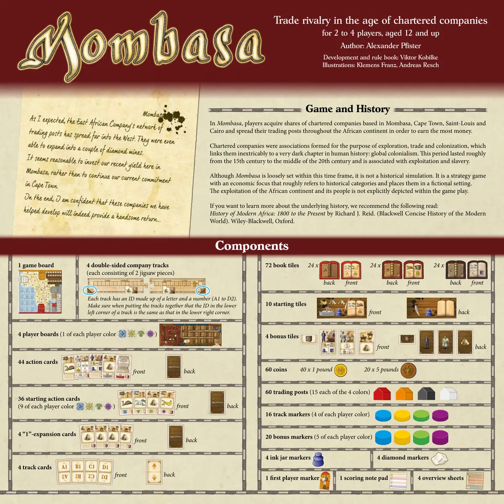
📝 第 1 页 AI 机翻对照（点击展开）
组件
1个游戏版图
4张双面公司轨道
（每张由2个拼图块组成）
4个玩家版图（每种玩家颜色各1张 ）
44张行动卡牌
36张初始行动卡牌
（每种玩家颜色各9张 ）
4张"1"扩展卡牌
4张轨道卡牌
特许公司时代的贸易竞争
适合2-4名玩家，12岁以上
作者：Alexander Pfister
开发与规则书：Viktor Kobilke
插图：Klemens Franz, Andreas Resch
72张板块
10张初始板块
4张奖励板块
60枚金币 40枚 x 1英镑
20枚 x 5英镑
60个贸易站（每种颜色各15个）
16个轨道标记（每种玩家颜色各4个）
20个奖励标记（每种玩家颜色各5个）
4个墨水瓶标记
4个钻石标记
1个起始玩家标记
1个记分便签本
4张概览表
游戏与历史
在《蒙巴萨》(Mombasa)中，玩家获取基于蒙巴萨、开普敦、圣路易斯和开罗的特许公司的股份，并在非洲大陆上扩展他们的贸易站，以赚取最多的金钱。
特许公司是为探索、贸易和殖民而成立的协会，它们与人类历史上一个非常黑暗的篇章——全球殖民主义——有着不可分割的联系。这个时期大致从15世纪持续到20世纪中叶，与剥削和奴役有关。
虽然《蒙巴萨》的背景大致设定在这个时间段内，但它并非历史模拟。它是一款以经济为重点的策略游戏，大致参考了历史类别，并将它们置于虚构的背景中。对非洲大陆及其人民的剥削在游戏中并未被明确描绘。
如果您想了解更多关于 underlying history 的信息，我们推荐以下阅读：
《现代非洲史：1800年至今》(History of Modern Africa: 1800 to the Present)，作者 Richard J. Reid。（《现代世界简史》系列）。Wiley-Blackwell，牛津。
每条轨道都有一个由字母和数字组成的ID（从A1到D2）。
在组装轨道时，请确保轨道左下角的ID与轨道右下角的ID相同。
正面
背面
背面
正面
正面
背面
正面
背面
24张
24张
背面
正面
背面
正面
背面
正面
24张
正面
背面
正面
背面
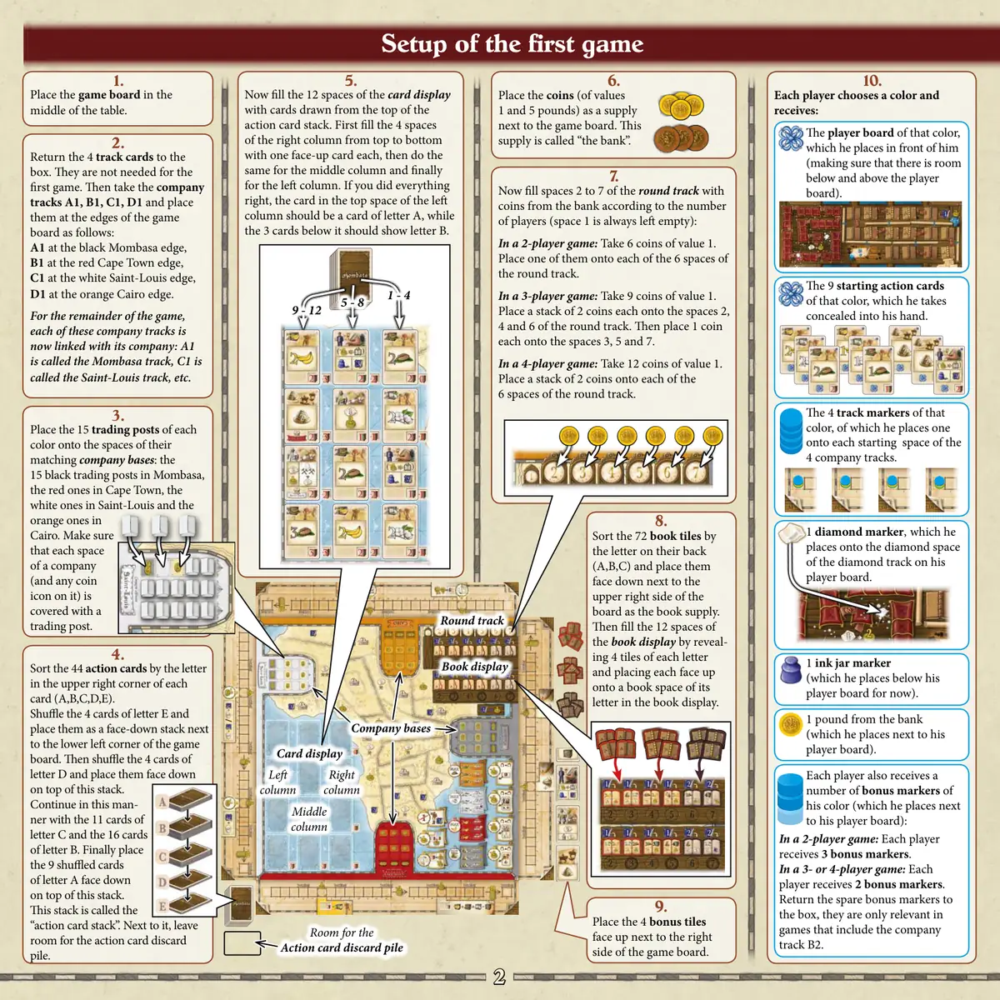
📝 第 2 页 AI 机翻对照（点击展开）
1 - 4
5 - 8
9 - 12
将游戏版图放在桌子中央。
将4张轨道卡放回盒中。第一局游戏不需要它们。然后取公司轨道A1、B1、C1、D1，将它们放在游戏版图的边缘，如下所示：
A1放在黑色蒙巴萨边缘，
B1放在红色开普敦边缘，
C1放在白色圣路易边缘，
D1放在橙色开罗边缘。
在本游戏的剩余时间里，这些公司轨道中的每一条现在都与它的公司关联：A1被称为蒙巴萨轨道，C1被称为圣路易轨道，等等。
1.
将每种颜色的15个贸易站放在其对应公司基地的格子上：15个黑色贸易站放在蒙巴萨，红色贸易站放在开普敦，白色贸易站放在圣路易，橙色贸易站放在开罗。确保每个公司基地的每个格子（以及上面的任何硬币图标）都被一个贸易站覆盖。
公司基地
右列
中列
左列
卡牌展示
书籍展示
按每张卡牌右上角的字母（A、B、C、D、E）对44张行动卡进行分类。
将字母E的4张卡洗牌，然后作为面朝下的牌堆放在游戏版图左下角旁边。然后将字母D的4张卡洗牌，面朝下放在这个牌堆的顶部。
用字母C的11张卡和字母B的16张卡以同样的方式继续。最后将字母A的9张洗好的牌面朝下放在这个牌堆的顶部。
这个牌堆被称为"行动卡牌堆"。在它旁边，留出行动卡弃牌堆的位置。
轮次轨道
现在从行动卡牌堆顶部抽取卡牌，填充卡牌展示区的12个格子。首先从上到下用一张面朝上的卡牌填充右列的4个格子，然后对中列做同样操作，最后对左列做同样操作。如果你一切正确，左列顶部格子的卡牌应该是字母A的卡，而它下面的3张卡应该显示字母B。
将硬币（面值为1和5英镑）作为补给放在游戏版图旁边。这个补给被称为"银行"。
现在根据玩家数量，从银行中取硬币填充轮次轨道的2到7号格子（1号格子始终保持空）：
在2人游戏中：取6枚面值为1的硬币。将一枚硬币放在轮次轨道的6个格子上。
在3人游戏中：取9枚面值为1的硬币。在轮次轨道的2、4、6号格子上各放一叠2枚硬币。然后在3、5、7号格子上各放1枚硬币。
在4人游戏中：取12枚面值为1的硬币。在轮次轨道的6个格子上各放一叠2枚硬币。
按书籍板块背面的字母（A、B、C）对72个书籍板块进行分类，然后面朝下放在版图右上角旁边，作为书籍补给。
然后通过翻开的方式填充书籍展示区的12个格子。
游戏设置
将每种字母的4个板块面朝上放置，并将每个板块放置到书籍展示区中对应字母的书籍空间上。
首局游戏设置
将4个奖励板块面朝上放置在游戏板右侧旁边。
行动牌弃牌堆的位置
每位玩家选择一种颜色并获得：
该颜色的玩家板，玩家将其放置在自己面前（确保玩家板上下方有足够空间）。
该颜色的9张起始行动牌，玩家将它们暗收入手牌。
该颜色的4个轨道指示物，玩家将每个指示物放置在4家公司轨道的起始空间上。
1个钻石指示物（玩家将其放置在自己玩家板上的钻石轨道的钻石空间上）。
1个墨水瓶指示物（玩家暂时将其放置在自己的玩家板下方）。
1个来自银行的英镑（玩家将其放置在自己的玩家板旁边）。
每位玩家还获得其颜色的若干奖励指示物（玩家将其放置在自己的玩家板旁边）：
在2人游戏中：每位玩家获得3个奖励指示物。
在3人或4人游戏中：每位玩家获得2个奖励指示物。
将多余的奖励指示物放回盒中，它们只在包含B2公司轨道的游戏中相关。
10.
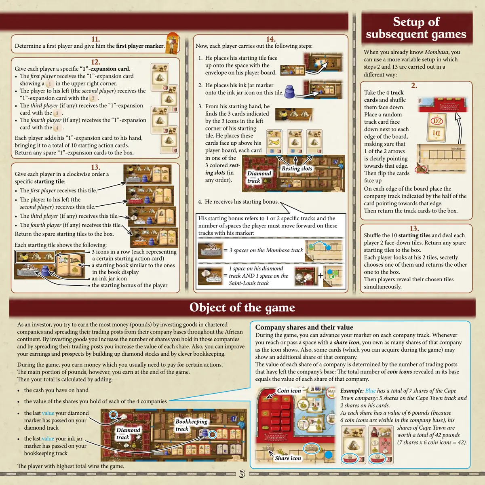
📝 第 3 页 AI 机翻对照（点击展开）
钻石
轨道
记账
轨道
+
钻石
轨道
休息位
当你已经熟悉蒙巴萨(Mombasa)时，你可以使用一种更灵活的设置，其中步骤2和13以不同的方式执行：
作为一名投资者，你通过向特许公司投资商品，并将他们的贸易站从公司基地扩展到整个非洲大陆，来赚取最多的钱(英镑)。通过投资商品，你增加在这些公司中持有的股份数量；通过扩展他们的贸易站，你增加每股的价值。此外，你可以通过积累钻石库存和精明的记账来提高你的收入和前景。
在游戏过程中，你赚取金钱，这些金钱通常需要用于支付某些行动。然而，大部分英镑在游戏结束时获得。
然后，你的总分通过以下相加计算得出：
• 你手头持有的现金
确定一个起始玩家并给他起始玩家标记。
给每位玩家一张特定的"1"扩展卡。
• 起始玩家获得右上角显示有 的"1"扩展卡。
• 他左边的玩家(第二位玩家)获得有 的"1"扩展卡。
• 第三位玩家(如果有)获得有 的"1"扩展卡。
• 第四位玩家(如果有)获得有 的"1"扩展卡。
每位玩家将他的"1"扩展卡加入手牌，使起始行动卡总数达到10张。
将多余的"1"扩展卡放回盒中。
后续游戏的设置
按顺时针方向给每位玩家一张特定的起始板块：
• 起始玩家获得这张板块。
• 他左边的玩家(第二位玩家)获得这张板块。
• 第三位玩家(如果有)获得这张板块。
• 第四位玩家(如果有)获得这张板块。
将多余的起始板块放回盒中。
每张起始板块显示以下内容：
• 一排3个图标(每个代表特定的起始行动卡)
• 一本与书架中类似的起始书
• 一个墨水瓶图标
• 玩家的起始奖励
现在，每位玩家执行以下步骤：
将4张轨道牌洗混，面朝下放置。
在版图每条边缘随机放置一张面朝下的轨道牌，确保2个箭头中的1个明显指向该边缘。
然后将牌翻面。
在版图每条边缘放置由指向该边缘的卡片半部分所指示的公司轨道。
然后将轨道牌放回盒中。
他的起始奖励指的是1或2条特定轨道，以及玩家必须在这些轨道上向前移动的格数：
在蒙巴萨轨道上前进3格
=
=
1. 他将起始板块面朝上放置在他玩家版图上带有信封的格子上。
2. 他放置他的墨水瓶指示物
onto the ink jar icon on this tile.
游戏目标
公司股份及其价值
在游戏过程中，你可以推进你在每个公司轨道上的你的指示物。每当到达或经过一个带有股份图标的格时，你拥有该公司的股份数量等于图标显示的数量。此外，一些卡牌（你可以在游戏过程中获取）可能显示该公司的额外股份。
每个公司每股的价值由已离开该公司基地的贸易站数量决定：在其基地中显示的所有金币图标总数等于该公司每股的价值。
示例：蓝色玩家拥有开普敦公司总共7股股份：5股在开普敦轨道上，2股在他的卡牌上。
由于每股价值为6英镑（因为公司基地中有6个金币图标可见），他的开普敦股份总价值为42英镑（7股×6个金币图标=42）。
股份图标
金币图标
• 你持有的4家公司中每家公司的股份价值
• 你的钻石指示器在你的钻石轨道上经过的最后一个价值
• 你的墨水瓶指示器在你的记账轨道上经过的最后一个价值
总分最高的玩家赢得游戏。
11.
2.
13.
将10个起始板块洗牌，然后给每位玩家发2个面朝下的板块。将多余的起始板块放回盒中。
每位玩家查看自己的2个板块，秘密选择其中一个，将另一个放回盒中。
然后玩家同时揭示他们选择的板块。
14.
12.
13.
3. 从他的起始手牌中，他找到他起始板块左上角3个图标所指示的3张卡牌。他将这些卡牌面朝上放置在他的玩家版图上方，每张卡牌放在3个彩色休息槽位中的任意一个（顺序任意）。
1个空间在他的钻石轨道上 AND 1个空间在圣路易斯轨道上
- 他获得他的起始奖励。
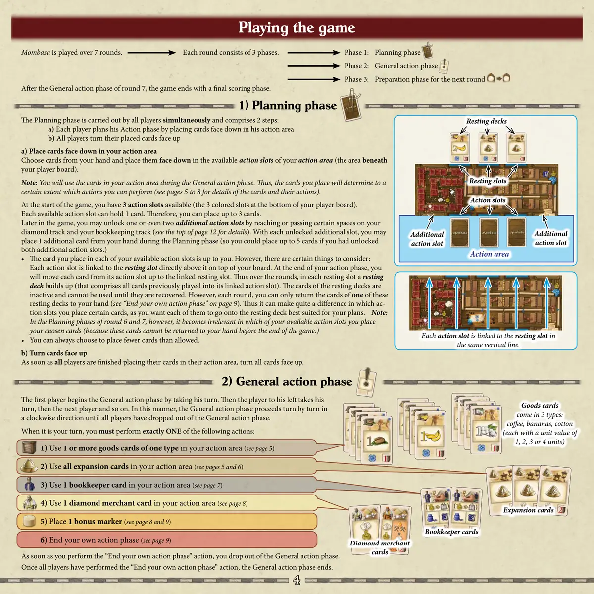
📝 第 4 页 AI 机翻对照（点击展开）
进行游戏
休息槽位
行动槽位
蒙巴萨游戏共进行7轮。
每轮包含3个阶段。
阶段1： 规划阶段
阶段2： 通用行动阶段
阶段3： 下一轮的准备阶段
在第7轮的通用行动阶段后，游戏以最终计分阶段结束。
1) 规划阶段
额外
行动槽位
额外
行动槽位
休息牌库
规划阶段由所有玩家同时进行，包含2个步骤：
a) 每位玩家通过将卡牌面朝下放置在自己的行动区域来规划自己的行动阶段
b) 所有玩家将他们放置的卡牌翻转为面朝上
a) 将卡牌面朝下放置在你的行动区域
从你的手牌中选择卡牌，并将它们面朝下放置在你的行动区域的可用行动槽位中（你玩家板下方的区域）。
注意：你将在通用行动阶段期间使用你行动区域中的卡牌。因此，你放置的卡牌将在一定程度上决定你可以执行哪些行动（关于卡牌及其行动的详细信息，请参见第5至8页）。
游戏开始时，你有3个可用的行动槽位（你玩家板底部的3个彩色槽位）。
每个可用的行动槽位可以容纳1张卡牌。因此，你可以放置最多3张卡牌。
游戏后期，当你到达或通过你的钻石轨道和记账轨道上的某些格位时，你可能会解锁一个甚至两个额外的行动槽位（详细信息请参见第12页顶部）。每个解锁的额外槽位，你可以在规划阶段从手牌中多放置1张卡牌（因此，如果你解锁了两个额外的行动槽位，你可以放置最多5张卡牌。）
• 你在每个可用行动槽位中放置的卡牌由你决定。然而，有几点需要考虑：
每个行动槽位与你玩家板上方的休息槽位直接相连。在你的行动阶段结束时，你将把每张卡牌从其行动槽位移动到相连的休息槽位。因此，在多轮游戏中，每个休息槽位会形成一个休息牌库（包含所有先前放入其相连行动槽位的卡牌）。休息牌库中的卡牌处于非激活状态，直到它们被回收才能使用。然而，每轮中，你只能将这些休息牌库中的一个牌库中的卡牌返回到手牌中（参见第9页"结束你自己的行动阶段"）。因此，在某些行动槽位中放置特定卡牌可能会产生相当大的差异，因为你希望每张卡牌都进入最适合你计划的休息牌库。注意：然而，在第6轮和第7轮的规划阶段中，你在哪些可用行动槽位中放置你选择的卡牌变得无关紧要（因为这些卡牌在游戏结束前无法返回到手牌中。）
• 你总是可以选择放置少于允许数量的卡牌。
b) 将卡牌翻转为面朝上
一旦所有玩家完成将他们的卡牌放置在行动区域，就将所有卡牌面朝上翻开。
行动区域
每个行动槽与同一垂直线上的休息槽相连。
2) 总体行动阶段
第一位玩家通过进行他的回合开始总体行动阶段。然后他左边的玩家进行他的回合，接着是下一位玩家，以此类推。以这种方式，总体行动阶段按顺时针方向逐回合进行，直到所有玩家都退出总体行动阶段。
轮到你时，你必须执行以下六项行动中的一项：
当你执行"结束你自己的行动阶段"行动时，你退出总体行动阶段。
一旦所有玩家都执行了"结束你自己的行动阶段"行动，总体行动阶段结束。
扩展卡牌
钻石商人卡牌
簿记员卡牌
货物卡牌
分为3种类型：
咖啡、香蕉、棉花
（每种都有1、2、3或4个单位的单位价值）
- 使用你行动区域中1张或多张同类型的货物卡牌（见第5页）
- 使用你行动区域中的所有扩展卡牌（见第5页和第6页）
- 使用你行动区域中的1张簿记员卡牌（见第7页）
- 使用你行动区域中的1张钻石商人卡牌（见第8页）
- 放置1个奖励标记（见第8页和第9页）
- 结束你自己的行动阶段（见第9页）
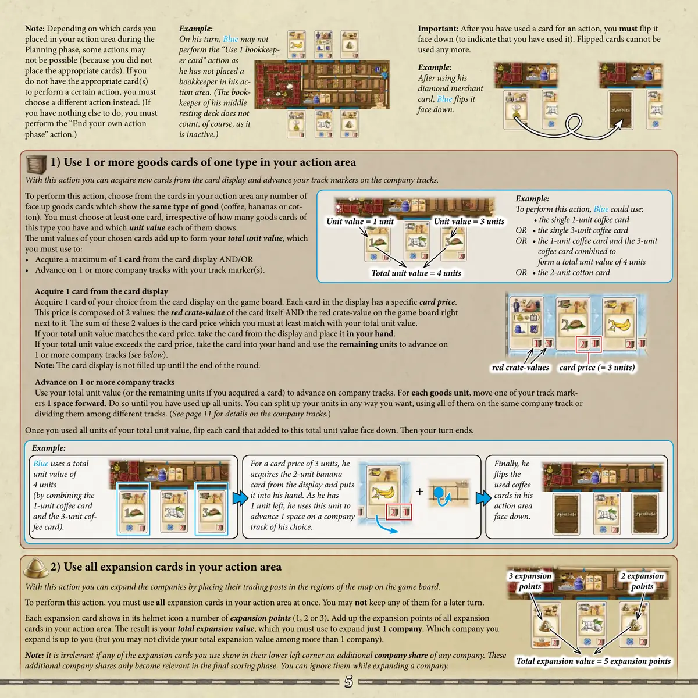
📝 第 5 页 AI 机翻对照（点击展开）
总单位价值 = 4 单位
单位价值 = 3 单位
单位价值 = 1 单位
红色板箱价值
卡牌价格 (= 3 单位)
+
从卡牌展示区获取1张卡牌
从游戏版图上的卡牌展示区获取1张你选择的卡牌。展示区中的每张卡牌都有特定的卡牌价格。
这个价格由2个价值组成：卡牌本身的红色板箱价值以及游戏版图上紧邻卡牌的红色板箱价值。这两个价值的总和就是卡牌价格，你必须用你的总单位价值至少匹配这个价格。
如果你的总单位价值匹配卡牌价格，从展示区取走卡牌并将其放入你的手牌。
如果你的总单位价值超过卡牌价格，将卡牌放入手牌，并用剩余的单位在1个或多个公司轨道上前进（见下文）。
注意：卡牌展示区直到回合结束时才会被填满。
示例：
要执行此行动，蓝色玩家可以使用：
• 单张1单位的咖啡卡
或者 • 单张3单位的咖啡卡
或者 • 1单位的咖啡卡和3单位的咖啡卡组合，形成总单位价值为4单位
或者 • 2单位的棉花卡
要执行此行动，从你的行动区域中选择任意数量的正面朝上的同类型商品卡牌（咖啡、香蕉或棉花）。你必须至少选择一张卡牌，无论你拥有多少此类商品卡牌，以及每张卡牌显示的单位价值是多少。
你选择的卡牌的单位价值相加形成你的总单位价值，你必须用它来：
• 从卡牌展示区获取最多1张卡牌 AND/OR
• 用你的轨道标记在1个或多个公司轨道上前进。
注意：根据你在规划阶段放置的卡牌，某些行动可能无法执行（因为你没有放置适当的卡牌）。如果你没有执行特定行动所需的适当卡牌，你必须选择不同的行动。（如果你没有其他事情可做，你必须执行"结束你自己的行动阶段"行动。）
示例：
在他的回合中，蓝色玩家不能执行"使用1张记账员卡"行动，因为他没有在行动区域放置记账员卡。（他中间休息牌库中的记账员卡当然不算数，因为它处于非激活状态。）
- 使用你行动区域中1种类型的1张或多张商品卡牌
通过此行动，你可以从卡牌展示区获取新卡牌，并在公司轨道上前进你的轨道标记。
在1个或多个公司轨道上前进
使用你的总单位值（或者如果你获得了一张卡牌，则使用剩余的单位）来在公司轨道上前进。对于每个货物单位，将你的一个轨道指示物向前移动1格。重复此操作，直到用完所有单位。你可以任意分配你的单位，可以全部用在同一条公司轨道上，也可以分配在不同的轨道上。（关于公司轨道的详细信息，请参见第11页。）
一旦你用完了总单位值的所有单位，将 contributing 到这个总单位值的每张卡牌翻面朝下。然后你的回合结束。
2) 使用你行动区域中的所有扩展卡牌
要执行此行动，你必须一次性使用行动区域中的所有扩展卡牌。你不能保留任何卡牌供以后的回合使用。
每张扩展卡牌在其头盔图标中显示一定数量的扩展点（1、2或3）。将行动区域中所有扩展卡牌的扩展点相加。结果就是你的总扩展值，你必须用这个总扩展值来扩展仅1家公司。扩展哪家公司由你决定（但你不能将总扩展值分配给超过1家公司）。
总扩展值 = 5扩展点
3扩展点
2扩展点
注意：如果你使用的任何扩展卡牌在其左下角显示了任何公司的额外股份，这是无关紧要的。这些额外股份只在最终计分阶段变得相关。在扩展公司时，你可以忽略它们。
通过此行动，你可以通过将公司的贸易站放置在游戏版图上的地图区域来扩展公司。
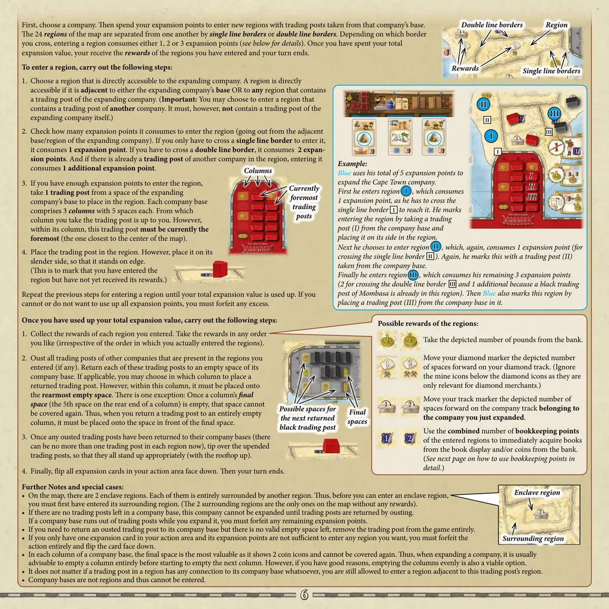
📝 第 6 页 AI 机翻对照（点击展开）
列
当前
主要
贸易站
I
II
I
II
III
I
II
III
I
II
III
I
II
III
III
最终
格子
下一个被收回的
黑色贸易站的
可能格子
飞地区域
周边区域
单线边界
双线边界
区域
奖励
一旦你用完你的总扩张值，请执行以下步骤：
- 收集你所进入的每个区域的奖励。你可以按照任何你喜欢的顺序领取奖励（与你实际进入区域的顺序无关）。
首先，选择一家公司。然后花费你的扩张点数，使用该公司基地中的贸易站进入新区域。
地图上的24个区域由单线边界或双线边界相互分隔。根据你穿越的边界类型，进入一个区域会消耗1、2或3个扩张点（详见下文）。一旦你花费完总扩张值，你将获得你所进入区域的奖励，然后你的回合结束。
从银行 depicted number 个英镑。
将你的钻石指示物在钻石轨道上向前移动 depicted number 个格子。（忽略钻石图标下方的矿场图标，因为它们只与钻石商人相关。）
将你的轨道指示物在你刚刚扩张的公司所属的轨道上向前移动 depicted number 个格子。
使用所进入区域的记账点总数，立即从书籍展示区获取书籍和/或从银行获取金币。（详见下一页关于如何使用记账点的详细说明。）
- 赶出你所进入区域中存在的其他公司的所有贸易站（如果有）。将这些贸易站中的每一个都返回到其公司基地的一个空格中。如果适用，你可以选择将返回的贸易站放置在哪一列。但是，在这一列内，它必须放置在最靠后的空格上。有一个例外：一旦一列的最终格子（列末端的第5个格子）为空，该格子不能再被覆盖。因此，当你将一个贸易站返回到一个完全空的列时，它必须放置在最终格子前方的格子上。
- 一旦所有被赶出的贸易站都已返回到它们的公司基地（现在每个区域最多只能有一个贸易站），将倒置的贸易站翻正，使它们都正确站立（屋顶朝上）。
- 最后，将你行动区域中的所有扩张牌面朝下翻转。然后你的回合结束。
区域的可能奖励：
进一步说明和特殊情况：
• 在地图上，有2个飞地区域。每个飞地区域完全被另一个区域包围。因此，在你能够进入一个飞地区域之前，
• 你必须首先进入其周边地区。（这2个周边地区是地图上唯一没有任何奖励的地区）。
• 如果公司基地中没有贸易站剩余，该公司在被驱逐前无法扩张，直到贸易站被归还。
• 如果你在扩张公司时公司基地的贸易站用尽，你必须放弃任何剩余的扩张点数。
• 如果你需要在公司基地中归还一个被驱逐的贸易站但没有有效的空位，则将该贸易站完全移出游戏。
• 如果你的行动区域中只有一张扩张卡，且其扩张点数不足以进入任何你想要的地区，你必须完全放弃该行动并将卡牌翻面朝下。
• 在公司基地的每一列中，最后一个空间最有价值，因为它显示2个金币图标且不能被再次覆盖。因此，扩张公司时，通常建议在开始清空下一列之前完全清空一列。然而，如果你有充分的理由，均匀清空各列也是一个可行的选择。
• 地区中的贸易站是否与其公司基地有任何连接都无关紧要，你仍然允许进入与此贸易站地区相邻的地区。
• 公司基地不是地区，因此不能进入。
要进入一个地区，请执行以下步骤：
- 选择一个可直接被扩张公司进入的地区。如果地区与扩张公司的基地相邻，或者与包含扩张公司贸易站的任何地区相邻，则该地区是可直接进入的。（重要：你可以选择进入包含另一家公司贸易站的地区。但是，它不能包含扩张公司自身的贸易站。）
- 检查进入该地区需要消耗多少扩张点数（从扩张公司的相邻基地/地区出发）。如果你只需要穿过一条线边界进入，则消耗1个扩张点数。如果你需要穿过双线边界，则消耗2个扩张点数。而且，如果地区中已有另一家公司的贸易站，进入该地区会额外消耗1个扩张点数。
3. 如果你有足够的扩张点数进入该地区，
从扩张公司基地的一个空间中取出1个贸易站放置在该地区。每个公司基地包含3列，每列有5个空间。从哪一列取出贸易站由你决定。但是，在其列内，该贸易站必须是当前最前端的（最靠近地图中心的那个）。
- 将贸易站放置在地区中。但是，将其放在其窄边上，使其直立放置。
（这是为了标记你已经进入该地区但尚未获得其奖励。）
重复进入区域的步骤，直到你的总扩张值用完。如果你无法或不想用完所有扩张点，你必须放弃任何多余的点数。
接下来他选择进入区域 ，这再次消耗了1个扩张点（用于穿越单线边境 ）。同样，他从公司基地取出一处贸易站(II)来标记这一点。
最后他进入区域 ，这消耗了他剩余的3个扩张点（2个用于穿越双线边境 ，另外1个是因为蒙巴萨的一处黑色贸易站已经在这个区域内）。然后蓝色玩家也通过从公司基地取出一个贸易站(III)放置在该区域内来标记这个区域。
示例：
蓝色玩家使用他的总共5个扩张点来扩张开普敦公司。
首先他进入区域 ，这消耗了1个扩张点，因为他必须穿越单线边境 才能到达该区域。他从公司基地取出一个贸易站(I)，将其侧立放置在该区域内，以此标记进入该区域。
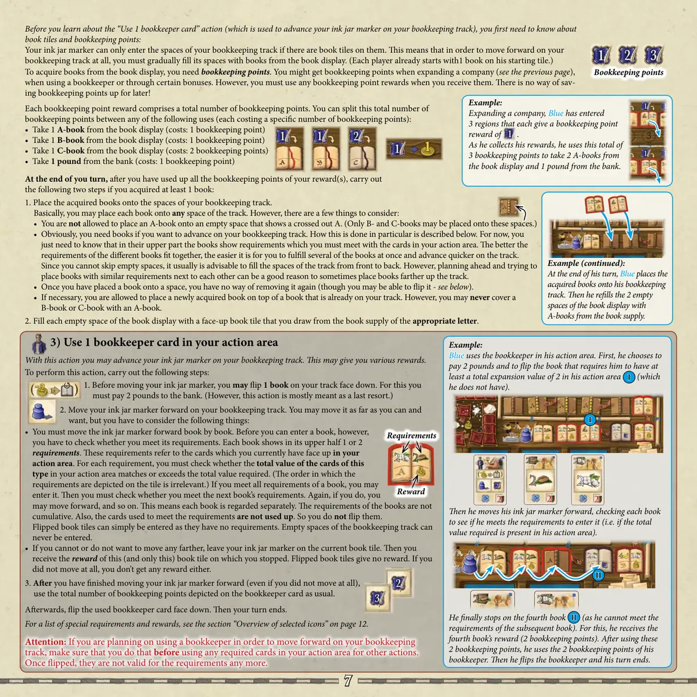
📝 第 7 页 AI 机翻对照（点击展开）
要求
奖励
II
I
II
I
- 在你的行动区域使用1名簿记员卡
通过这个行动，你可以将你的墨水瓶指示物在你的记账轨道上前进。这可能会给你带来各种奖励。
在你了解"使用1名簿记员卡"行动（用于将你的墨水瓶指示物在记账轨道上前进）之前，你首先需要了解书籍板块和记账点：
你的墨水瓶指示物只能进入你的记账轨道上有书籍板块的格。这意味着，要在记账轨道上前进，你必须逐渐用书籍展示区的书籍填充这些格。（每位玩家已经在起始格上拥有1本书。）
记账点
要从书籍展示区获取书籍，你需要记账点。扩展公司时（见前一页）、使用簿记员或通过某些奖励时，你可能会获得记账点。但是，你必须在获得记账点奖励时立即使用它们。没有办法将记账点留到以后使用！
示例：
扩展公司时，蓝色进入了3个区域，每个区域都给予记账点奖励。
当他收集奖励时，他用这总计3个记账点从书籍展示区取走2本A类书籍和1英镑。
示例（续）：
在他的回合结束时，蓝色将获得的书籍放置到他的记账轨道上。然后他从书籍供应区用A类书籍补充书籍展示区的2个空格。
每个记账点奖励包含一个记账点总数。你可以将这个记账点总数分配给以下任何用途（每种用途需要特定数量的记账点）：
• 从书籍展示区取走1本A类书籍（花费：1个记账点）
• 从书籍展示区取走1本B类书籍（花费：1个记账点）
• 从书籍展示区取走1本C类书籍（花费：2个记账点）
• 从银行取走1英镑（花费：1个记账点）
在你的回合结束时，在你用完所有奖励的记账点后，如果你至少获得了1本书，请执行以下两个步骤：
- 将获得的书籍放置到你的记账轨道的格上。
基本上，你可以将每本书放置到轨道的任何格上。但是，有几点需要注意：
• 不允许将A类书籍放置在有划掉A的空格上。（只有B类和C类书籍可以放置在这些格上。）
• 显然，如果你想在记账轨道上前进，你需要书籍。具体如何操作将在下面描述。现在，你只需要知道书籍的上方部分显示要求，你必须用你行动区域的卡牌满足这些要求。书籍越好，
不同书籍的要求越契合，你就越容易同时满足多本书的要求，并在进度上更快前进。
由于你不能跳过空格，通常建议从前到后填充进度条上的空格。然而，提前规划并尝试将要求相似的书籍放置在一起，有时是让你将书籍放置在进度条更前方的充分理由。
• 一旦你将一本书放置到一个空格上，你就无法再将其移除（尽管你可能可以翻转它——见下文）。
• 如有必要，你允许将新获得的书籍放置在你进度条上已有的书籍之上。但是，你绝不能将B类或C类书籍用A类书籍覆盖。
- 用从相应字母的书籍供应库中摸取的一张正面朝上的书籍板块填充书籍展示区的每个空格。
执行此行动时，请进行以下步骤：
- 在移动你的墨水瓶标记之前，你可以将你进度条上的一本书翻转成背面朝下。为此，你必须向银行支付2英镑。（然而，这个行动主要被视为最后的手段。）
- 在你的记账进度条上向前移动你的墨水瓶标记。你可以尽可能远地移动它，并且愿意移动多远就移动多远，但你必须考虑以下几点：
• 你必须逐本书地向前移动墨水瓶标记。然而，在进入一本书之前，你必须检查你是否满足其要求。每本书在其上半部分显示1或2个要求。这些要求指的是你当前在你的行动区域正面朝上的卡牌。对于每个要求，你必须检查你行动区域中这类卡牌的总价值是否等于或超过所需的总价值。（板块上显示要求的顺序无关紧要。）如果你满足一本书的所有要求，你可以进入它。然后你必须检查下一本书的要求。同样，如果你满足，你可以继续前进，依此类推。这意味着每本书都被单独考虑。书籍的要求不是累积的。此外，用于满足要求的卡牌不会被消耗掉。所以你不需要翻转它们。翻转的书籍板块可以直接进入，因为它们没有要求。记账进度条的空格永远不能进入。
• 如果你不能或不想再向前移动，将你的墨水瓶标记停留在当前书籍板块上。然后你将获得你停留的这本（且仅这本）书籍板块的奖励。翻转的书籍板块不给予奖励。如果你根本没有移动，你也不会获得任何奖励。
- 在你完成向前移动你的墨水瓶标记后（即使你根本没有移动），像往常一样使用记账卡上显示的总记账点数。
示例：
蓝色玩家在他的行动区域使用记账员。首先，他选择支付2英镑并翻开那本要求他在行动区域拥有至少总扩展价值2的书（而他并没有）。
然后，他将他的墨水瓶指示物向前移动，检查每一本书，看看他是否符合进入该书的条件（即，如果所需的总价值存在于他的行动区域中）。
他最终停在第四本书上（因为他无法满足后续书籍的要求）。为此，他获得第四本书的奖励（2记账点）。在使用这2个记账点后，他使用他的记账员的2个记账点。然后他翻开记账员，他的回合结束。
之后，将使用过的记账员卡牌翻面。然后你的回合结束。
有关特殊要求和奖励的列表，请参见第12页的"所选图标概览"部分。
注意：如果你计划使用记账员在记账轨道上前进，请确保你在为其他行动使用行动区域中的任何必需卡牌之前这样做。一旦翻开，它们就不再满足任何要求。
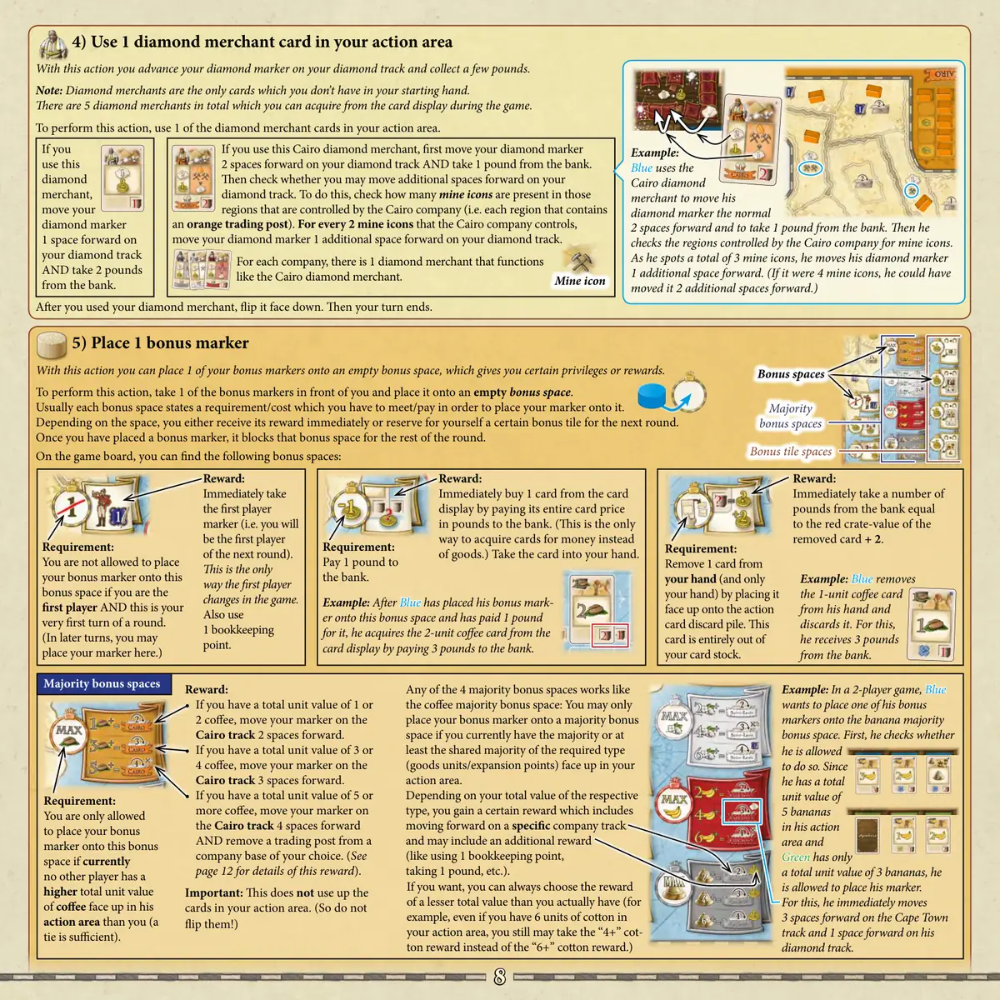
📝 第 8 页 AI 机翻对照（点击展开）
矿场图标
多数
奖励空间
奖励板块空间
奖励空间
- 使用你行动区域中的1张钻石商人卡
通过此行动，你可以在钻石轨道上前进你的钻石标记，并获得几英镑。
注意：钻石商人是你起始手牌中唯一没有的卡牌。
总共有5张钻石商人，你可以在游戏期间从牌展中获取。
要执行此行动，使用你行动区域中的1张钻石商人卡。
示例：
蓝色玩家使用
开罗钻石商人
将他的钻石标记
正常前进2格，并从银行获得1英镑。然后他检查开罗公司控制的区域中的矿场图标。
由于他总共发现了3个矿场图标，他的钻石标记
额外前进1格。（如果是4个矿场图标，他可以额外前进2格。）
如果你
使用这张
钻石商人，
将你的钻石标记
在钻石轨道上前进1格
并从银行获得2英镑。
如果你使用这张开罗钻石商人，首先将你的钻石标记
在钻石轨道上前进2格并从银行获得1英镑。
然后检查你是否可以在钻石轨道上额外前进。为此，检查开罗公司控制的区域中有多少矿场图标（即包含橙色贸易站的每个区域）。对于开罗公司控制的每2个矿场图标，将你的钻石标记在钻石轨道上额外前进1格。
对于每家公司，都有1张像开罗钻石商人一样运作的钻石商人。
在你使用钻石商人后，将其翻面朝下。然后你的回合结束。
- 放置1个奖励标记
通过此行动，你可以将你的1个奖励标记放置到一个空的奖励空间上，这会给你带来某些特权或奖励。
要执行此行动，拿起你面前的1个奖励标记，并将其放置到一个空的奖励空间上。
通常每个奖励空间都说明了一个要求/费用，你必须满足/支付才能将你的标记放置在上面。
根据空间的不同，你立即获得其奖励，或者为下一轮保留一张特定的奖励板块。
一旦你放置了奖励标记，它会在该轮剩余时间内阻止该奖励空间的使用。
在游戏版图上，你可以找到以下奖励空间：
要求：
如果你是起始玩家并且这轮是你的第一个回合，你不允许将你的奖励标记放置到这个奖励空间上。
（在后续回合中，你可以将你的标记放在这里。）
奖励：
立即获得起始玩家标记（即你将成为下一轮的起始玩家）。
这是游戏中起始玩家变更的唯一方式。
同时使用
1个记账点。
要求：
向银行支付1英镑。
奖励：
立即通过向银行支付其完整的卡牌价格（以英镑计）来从卡牌展示区购买1张卡牌。（这是用金钱而非货物获取卡牌的唯一方式）。将卡牌收入你的手牌。
示例：在蓝色玩家将他的奖励标记放置到这个奖励空间上并为此支付1英镑后，他通过向银行支付3英镑从卡牌展示区获得了2单位的咖啡卡牌。
要求：
从你的手牌中移除1张卡牌（且只能从你的手牌中），通过将其正面朝上放置到行动卡牌弃牌堆。这张卡牌完全脱离你的卡牌库存。
奖励：
立即从银行获得与被移除卡牌的红箱价值相等的英镑数量 + 2。
示例：蓝色玩家从他的手牌中移除并弃掉了1单位的咖啡卡牌。为此，他从银行获得了3英镑。
要求：
只有当当前没有其他玩家在他的行动区域中拥有比你更高的咖啡单位总价值时，你才被允许将你的奖励标记放置到这个奖励空间上（平局即可）。
奖励：
• 如果你拥有1或2单位的咖啡总价值，将你的标记在开罗轨道上向前移动2格。
• 如果你拥有3或4单位的咖啡总价值，将你的标记在开罗轨道上向前移动3格。
• 如果你拥有5单位或更多的咖啡总价值，将你的标记在开罗轨道上向前移动4格，并从你选择的公司基地移除一个贸易站。（有关此奖励的详细信息，请参见第12页）。
重要：这不消耗你行动区域中的卡牌。（所以不要翻转它们！）
4个多数奖励空间中的任何一个都像咖啡多数奖励空间一样运作：只有当你当前在行动区域中拥有所需类型（货物单位/扩展点）的多数或至少共享多数时，你才可以将你的奖励标记放置到多数奖励空间上。
根据你相应类型的总价值，你将获得特定奖励，包括在特定公司轨道上前进，并可能包括额外奖励（如使用1个记账点、获得1英镑等）。
多数奖励空间
示例：在2人游戏中，蓝色玩家想要将他的一枚奖励标记放置到香蕉多数奖励空间上。首先，他检查自己是否被允许这样做。由于他在行动区域中拥有5单位的香蕉总价值，而绿色玩家只有3单位的香蕉总价值，所以他被允许放置他的标记。为此，他立即在开普敦轨道上前进3格，并在他的钻石轨道上前进1格。
如果你愿意，你总是可以选择比你实际拥有的总价值更低的奖励（例如，即使你的行动区域中有6单位的棉花，你仍然可以选择"4+"棉花奖励，而不是"6+"棉花奖励。）
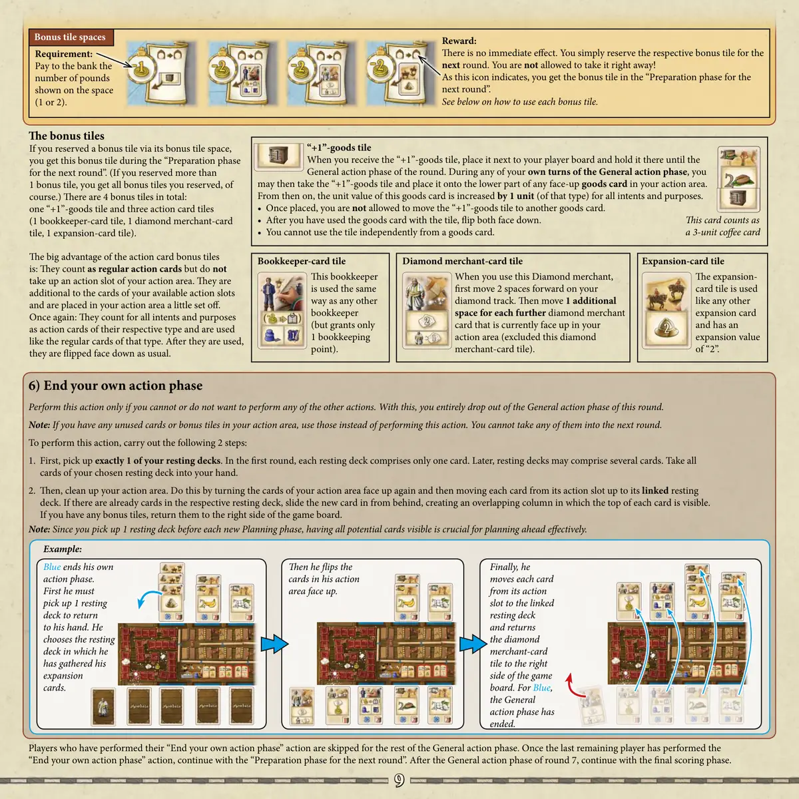
📝 第 9 页 AI 机翻对照（点击展开）
6) 结束你自己的行动阶段
要求：
向银行支付
该空间上显示的
英镑数量
（1或2）。
奖励：
没有即时效果。你只是为下一轮保留了相应的奖励板块。你不允许立即拿走它！
如该图标所示，你将在"下一轮的准备阶段"获得奖励板块。
请参阅下文了解如何使用每种奖励板块。
只有当你不能或不想执行任何其他行动时，才执行此行动。通过这样做，你完全退出了本轮的通用行动阶段。
注意：如果你在行动区域有任何未使用的卡牌或奖励板块，请使用它们而不是执行此行动。你不能将它们中的任何一个带入下一轮。
要执行此行动，请执行以下2个步骤：
- 首先，拿起恰好1个你的休息牌库。在第一轮，每个休息牌库只有一张卡牌。后来，休息牌库可能包含多张卡牌。将你选择的休息牌库中的所有卡牌拿入你的手牌。
- 然后，清理你的行动区域。通过将行动区域中的卡牌再次翻面，然后将每张卡牌从其行动槽位移动到其链接的休息牌库来完成此操作。如果相应的休息牌库中已经有卡牌，则从后面将新卡牌滑入，创建一个重叠的列，其中每张卡牌的顶部都是可见的。
如果你有任何奖励板块，将它们归还到游戏板的右侧。
注意：由于你在每个新的规划阶段之前会拿起1个休息牌库，让所有潜在卡牌可见对于有效规划至关重要。
蓝结束了他自己的
行动阶段。
首先他必须
拿起1个休息牌库
放回他的手牌。他
选择了他收集了
扩展卡牌的
休息牌库。
然后他翻开了
他行动区域中的
卡牌。
最后，他将每张卡牌
从其行动槽位移动到
链接的休息牌库，
并将钻石商人卡牌板块
归还到游戏板的右侧。
对于蓝来说，
通用行动阶段
已经结束。
示例：
执行了"结束你自己的行动阶段"行动的玩家在剩余的通用行动阶段中被跳过。当最后剩下的玩家执行了"结束你自己的行动阶段"行动后，继续进行"下一轮的准备阶段"。在第7轮的通用行动阶段之后，继续进行最终计分阶段。
奖励板块空间
奖励板块
如果你通过奖励板块空间保留了奖励板块，你将在"下一轮的准备阶段"获得此奖励板块。（如果你保留了多个奖励板块，你当然会获得你保留的所有奖励板块。）总共有4个奖励板块：
一个"+1"货物板块和三个行动卡牌板块（1个簿记员卡牌板块、1个钻石商人卡牌板块、1个扩展卡牌板块）。
行动卡奖励板块的最大优势是：它们算作常规行动卡，但不占用你行动区域中的行动槽位。它们是你可用行动槽位卡牌之外的额外卡牌，并被放置在你的行动区域中，稍微偏移一些位置。再次强调：它们在所有意图和目的上都算作其各自类型的行动卡，并像该类型的常规卡牌一样使用。使用后，它们会像往常一样被翻面朝下。
记账员卡板块
钻石商人卡板块
扩展卡板块
"+1"货物板块
当你获得"+1"货物板块时，将其放置在你的玩家板旁边并持有它，直到该轮的常规行动阶段。在常规行动阶段中你自己的任何回合，你可以拿起"+1"货物板块并将其放置在你行动区域中任意一张正面朝上的货物卡的下部。从此以后，该货物卡的单位价值在所有意图和目的上都增加了1个单位（该类型）。
• 一旦放置，不允许将"+1"货物板块移动到另一张货物卡上。
• 使用带有该板块的货物卡后，将两者都翻面朝下。
• 你不能独立于货物卡使用该板块。
这张卡算作一张3单位咖啡卡
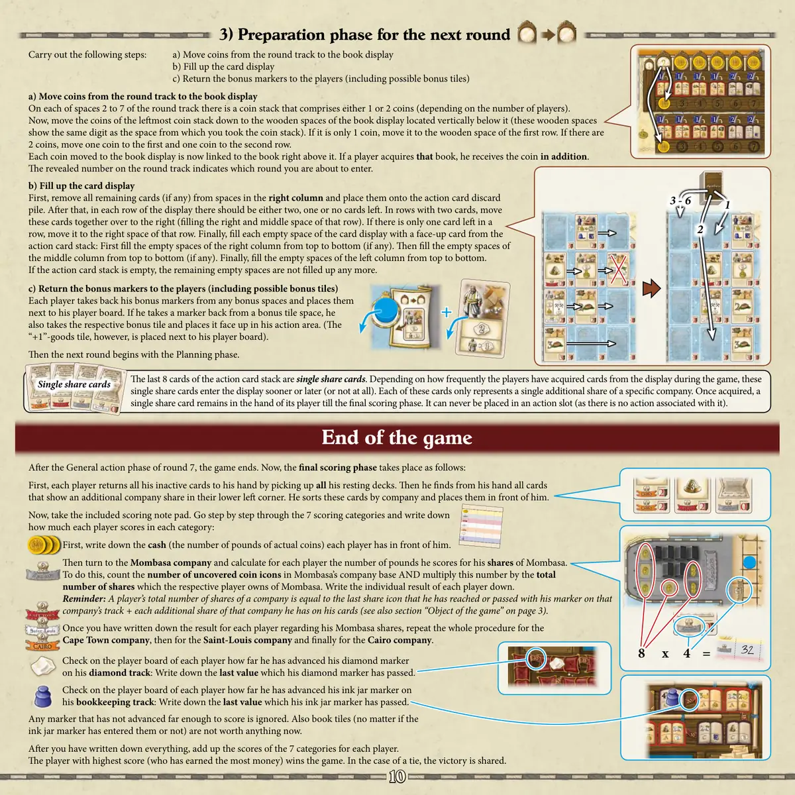
📝 第 10 页 AI 机翻对照（点击展开）
3 - 6
+
x
=
3) 下一轮的准备阶段
执行以下步骤：
a) 将轮次轨道上的硬币移至书籍展示区
b) 补充卡牌展示区
c) 将奖励标记返还给玩家（包括可能的奖励板块）
a) 将轮次轨道上的硬币移至书籍展示区
在轮次轨道的第2到第7格上，各有一叠硬币，每叠包含1或2枚硬币（取决于玩家数量）。
现在，将最左侧硬币堆的硬币移至其正下方的书籍展示区的木制格子上（这些木制格子上显示的数字与您取出硬币堆的格子的数字相同）。如果只有1枚硬币，则将其移至第一行的木制格。如果有2枚硬币，则将一枚移至第一行，一枚移至第二行。
每枚移至书籍展示区的硬币现在都与它正上方的书籍关联。如果玩家获得该书籍，他将额外获得这枚硬币。
轮次轨道上显示的数字表示您即将进入的轮次。
b) 补充卡牌展示区
首先，将右列格子中剩余的所有卡牌（如果有）移至行动牌弃牌堆。之后，展示区的每一行应剩下两张、一张或没有卡牌。在有两张卡牌的行中，将这些卡牌一起移至右侧（填充该行的右侧和中间格）。如果一行只剩一张卡牌，则将其移至该行的右侧格。最后，从行动牌堆中取面朝上的卡牌填充卡牌展示区的每个空格：首先从上到下填充右列的空格（如果有）。然后从上到下填充中列的空格（如果有）。最后从上到下填充左列的空格。
如果行动牌堆已空，则剩余的空格不再填充。
c) 将奖励标记返还给玩家（包括可能的奖励板块）
每位玩家从任何奖励空间取回自己的奖励标记，并将其放在自己玩家板旁边。如果他从奖励板块空间取回标记，他也取走相应的奖励板块，并将其面朝上放在自己的行动区。（然而，"+1"货物板块放在玩家板旁边）。
然后下一轮以规划阶段开始。
游戏结束
在第7轮的通用行动阶段后，游戏结束。现在，最终计分阶段如下进行：
首先，每位玩家通过拿起自己所有休息牌堆，将所有非活跃卡牌返还到手牌。然后他从手牌中找出所有左下角显示额外公司股份的卡牌。他按公司对这些卡牌进行分类，并将它们放在自己面前。
现在，取出随记分便签纸。按照7个计分类别逐步进行，并记下每位玩家在每个类别中获得的分数：
首先，记下每位玩家面前拥有的现金（实际硬币的数量，以英镑计）。
然后转向蒙巴萨公司，计算每位玩家因其持有的蒙巴萨股份而获得的英镑数。为此，计算蒙巴萨公司基地中未被覆盖的硬币图标的数量，并将该数字乘以该玩家拥有的蒙巴萨股份总数。记下每位玩家的个别结果。
提醒：玩家对某公司的股份总数等于其在该公司轨道上用其标记已到达或经过的最后一个股份图标，加上他卡牌中该公司的额外股份（另见第3页"游戏目标"部分）。
记下每位玩家关于其蒙巴萨股份的结果后，对开普敦公司重复整个过程，然后对圣路易斯公司，最后对开罗公司进行。
行动牌堆的最后8张是单张股份牌。根据玩家在游戏过程中从展示区获取牌的频率，这些单张股份牌会 sooner or later 进入展示区（或者根本不进入）。每张这样的牌仅代表某公司的额外单张股份。一旦获得，单张股份牌会保留在其玩家手中直到最终计分阶段。它永远不会被放入行动槽（因为它没有关联的行动）。
单张股份牌
检查每位玩家的玩家板，看其钻石标记在钻石轨道上前进的距离：记下其钻石标记已经过的最后一个数值。
检查每位玩家的玩家板，看其墨水瓶标记在记账轨道上前进的距离：记下其墨水瓶标记已经过的最后一个数值。
任何前进距离不足以得分的标记都被忽略。此外，记账板块（无论墨水瓶标记是否进入它们）现在也不值任何分数。
记下所有内容后，将每位玩家的7个类别分数相加。
得分最高的玩家（即赚得最多钱的玩家）赢得游戏。若出现平局，则共享胜利。
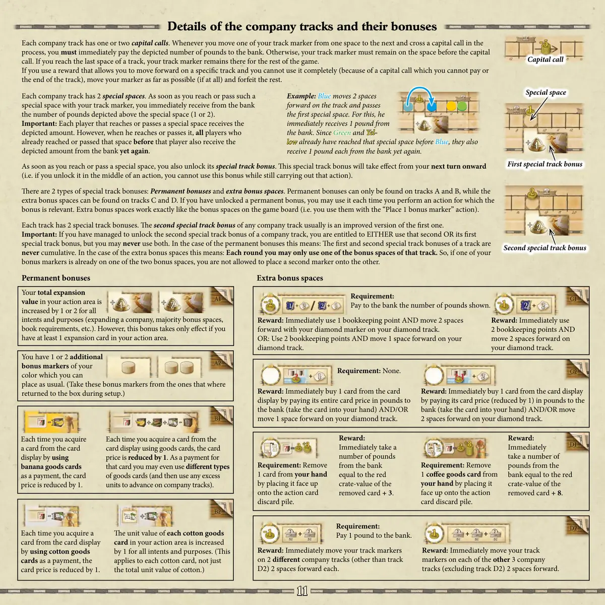
📝 第 11 页 AI 机翻对照（点击展开）
每条公司轨道有一个或两次注资要求。每当你的轨道指示物从一个格移动到下一个格并在此过程中穿过一个注资要求时，你必须立即向银行支付图中标注的英镑数。否则，你的轨道指示物必须停留在注资要求前的那个格。如果你到达一条轨道的最后一个格，你的轨道指示物将在游戏的剩余时间内停留在那里。
如果你使用一个允许你在特定轨道上前进的奖励，而你无法完全使用它（因为无法支付注资要求或到达轨道终点），请尽可能远地移动你的指示物（如果可能的话），并放弃剩余的部分。
注资要求
特殊格
第一条特殊轨道奖励
第二条特殊轨道奖励
你行动区域中的总扩展价值
增加1或2，适用于所有情况
你有1或2个额外颜色的奖励指示物，
你可以使用它们
每次你通过使用香蕉商品卡作为支付方式从卡牌展示区获取一张卡牌时，卡牌价格减少1。
每次你通过使用商品卡从卡牌展示区获取一张卡牌时，卡牌价格减少1。作为该卡的支付，你甚至可以使用不同类型的商品卡（然后使用任何多余的单位在公司轨道上前进）。
每次你通过使用棉花商品卡作为支付方式从卡牌展示区获取一张卡牌时，卡牌价格减少1。
你行动区域中每张棉花商品卡的单位价值在所有情况下都增加1。（这适用于每张棉花卡，而不仅仅是棉花总单位价值。）
奖励：立即使用1记账点，并在你的钻石轨道上用你的钻石指示物前进2格。
或者：使用2记账点，并在你的钻石轨道上前进1格。
奖励：立即通过向银行支付其全部卡牌价格的英镑从卡牌展示区购买1张卡牌（将卡牌收入手牌）和/或在你的钻石轨道上前进1格。
要求：通过将1张手牌正面朝上放置到行动卡弃牌堆来移除它。
奖励：立即从银行获得与被移除卡牌的红箱价值+3相等的英镑数。
奖励：立即通过向银行支付（卡牌价格-1）的英镑从卡牌展示区购买1张卡牌（将卡牌收入手牌）和/或在你的钻石轨道上前进2格。
要求：通过将1张咖啡商品卡正面朝上放置到行动卡弃牌堆来从手牌中移除它。
奖励：立即从银行获得与被移除卡牌的红箱价值+8相等的英镑数。
奖励：立即将你在2条不同公司轨道（D2轨道除外）上的轨道指示物各前进2格。
奖励：立即将你在其他3条公司轨道上的轨道指示物各前进
（不包括D2轨道）向前移动2个格。
奖励：立即使用
2个记账点 AND
在你的钻石轨道上向前移动2个格。
永久奖励
额外奖励格
目的而言（扩展公司，多数奖励格，书籍要求等）。然而，这个奖励只有在你的行动区域中至少有1张扩展牌时才会生效。
像平常一样放置。（这些奖励标记从设置过程中返还到盒子中的那些中获取。）
要求：
向银行支付所示数量的英镑。
要求：无。
要求：
向银行支付1英镑。
公司轨道及其奖励的详细信息
示例：蓝色在轨道上向前移动2个格，并经过了第一个特殊格。为此，他立即从银行获得1英镑。由于绿色和黄色在蓝色之前已经到达了那个特殊格，他们也再次从银行各获得1英镑。
每个公司轨道有2个特殊格。当你用你的轨道标记到达或经过这样的特殊格时，你立即从银行获得特殊格上方所示数量的英镑（1或2）。
重要：每个到达或经过特殊格的玩家都会获得所示金额。然而，当他到达或经过该格时，所有在此之前已经到达或经过该格的玩家也会再次从银行获得所示金额。
一旦你到达或经过特殊格，你也会解锁其特殊轨道奖励。这个特殊轨道奖励将从你的下一个回合开始生效（即，如果你在行动中途解锁它，你在执行该行动时不能使用这个奖励）。
有2种特殊轨道奖励：永久奖励和额外奖励格。永久奖励只能在轨道A和B上找到，而额外奖励格可以在轨道C和D上找到。如果你解锁了永久奖励，你可以在执行相关奖励的行动时使用它。额外奖励格的工作方式与游戏版图上的奖励格完全相同（即，你使用它们来执行"放置1个奖励标记"的行动）。
每条轨道有2个特殊轨道奖励。任何公司轨道的第二个特殊轨道奖励通常是第一个的改进版本。
重要：如果你成功解锁了一条公司轨道的第二个特殊轨道奖励，你可以选择使用第二个或其第一个特殊轨道奖励，但绝不能同时使用两者。对于永久奖励来说，这意味着：一条轨道的第一个和第二个特殊轨道奖励永远不会累积。对于额外奖励格来说，这意味着：每轮你只能使用该轨道的一个奖励格。因此，如果你的
如果其中一个两个奖励空间上已经有奖励指示物，则不允许你将第二个指示物放置到另一个上。
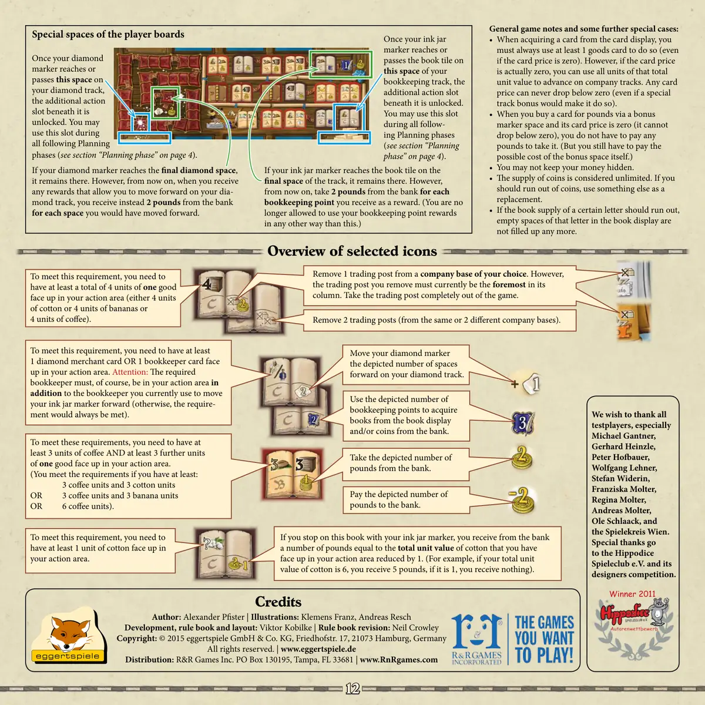
📝 第 12 页 AI 机翻对照（点击展开）
2011年获奖者
我们希望感谢所有
测试玩家，特别是
Michael Gantner,
Gerhard Heinzle,
Peter Hofbauer,
Wolfgang Lehner,
Stefan Widerin,
Franziska Molter,
Regina Molter,
Andreas Molter,
Ole Schlaack, 以及
Spielekreis Wien游戏圈。
特别感谢
Hippodice
Spieleclub e.V. 及其
设计师比赛。
通用游戏规则和一些特殊情况：
• 从卡牌展示区获取卡牌时，你必须始终至少使用1张商品卡牌（即使卡牌价格为0）。然而，如果卡牌价格确实为0，你可以使用该总单位值的所有单位来推进公司轨道。任何卡牌价格都不能降至零以下（即使特殊轨道奖励会使价格降至零）。
• 通过奖励标记格使用英镑购买卡牌，且其卡牌价格为0（价格不能降至零以下）时，你无需支付任何英镑即可获取它。（但你仍需支付奖励格本身的可能费用。）
• 你不得隐藏你的金钱。
• 硬币供应被视为无限量。如果你用完了硬币，请使用其他物品作为替代。
• 如果某种字母的书本供应用尽，书本展示区中该字母的空格将不再被填满。
当你的钻石指示物到达或超过
你钻石轨道上的这个空间时，
它下方的额外行动槽位
将被解锁。你可以在所有后续的
规划阶段使用此槽位（参见第4页
"规划阶段"部分）。
当你的墨水瓶指示物到达或超过
你记账轨道上这个空间的板块时，
它下方的额外行动槽位
将被解锁。你可以在所有后续的
规划阶段使用此槽位（参见第4页
"规划阶段"部分）。
如果你的墨水瓶指示物到达轨道
最后一个空间的板块，它将停留在那里。
然而，从现在开始，你每收到一个作为奖励的
记账点，就从银行获得2英镑。（你不再
被允许以任何其他方式使用你的记账点奖励。）
玩家板块的特殊空间
如果你的钻石指示物到达最后的钻石空间，
它将停留在那里。然而，从现在开始，当你收到
任何允许你在钻石轨道上前进的奖励时，
你将从银行获得相当于你本应前进空间数的
2英镑作为替代。
精选图标概览
作者：Alexander Pfister | 插画：Klemens Franz, Andreas Resch
开发、规则书和排版：Viktor Kobilke | 规则书修订：Neil Crowley
版权：© 2015 eggertspiele GmbH & Co. KG, Friedhofstr. 17, 21073 Hamburg, Germany
保留所有权利。| www.eggertspiele.de
发行：R&R Games Inc. PO Box 130195, Tampa, FL 33681 | www.RnRgames.com
致谢
为满足此要求，你需要
在你的行动区域正面朝上至少有1单位棉花。
如果你的墨水瓶标记停在这本书上，你从银行获得等于你在行动区域正面朝上的棉花总单位价值减1的英镑数。（例如，如果你的棉花总单位价值是6，你获得5英镑；如果是1，你什么也得不到）。
要满足此要求，你需要在行动区域正面朝上至少有总计4单位的同一种商品（4单位棉花或4单位香蕉或4单位咖啡）。
从你选择的公司基地移除1个贸易站。但是，你移除的贸易站必须是当前所在列最前面的一个。将贸易站完全移出游戏。
要满足这些要求，你需要在行动区域正面朝上至少有3单位咖啡，并且至少还有另外3单位的同一种商品。
（如果你至少有以下情况，就满足要求：
3单位咖啡和3单位棉花
或
3单位咖啡和3单位香蕉
或
6单位咖啡）。
要满足此要求，你需要在行动区域正面朝上至少有1个钻石商人卡或1个簿记员卡。注意：当然，除了你当前用来推动墨水瓶标记前进的簿记员外，所需的簿记员也必须位于你的行动区域（否则，要求将总是得到满足）。
向银行支付图中所示的英镑数。
从银行获得图中所示的英镑数。
将你的钻石标记在钻石轨道上向前移动图中所示的空间数。
使用图中所示的簿记点来从书籍展示区和/或银行获取书籍和/或硬币。
移除2个贸易站（来自相同或2个不同的公司基地）。